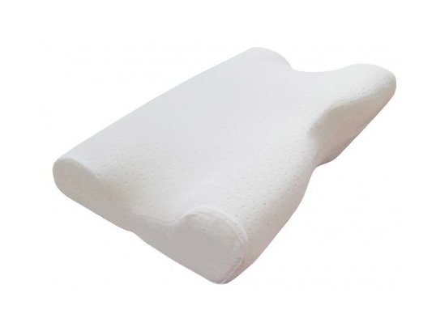

Ortopedinės pagalvės sveikam miegui | AURAPLUS
 Kiekis: 0 Iš viso: 0.00 EUR Peržiūrėti krepšelį LT EN RU Meniu Katalogas Čiužiniai Antčiužiniai Pagalvės Užvalkalai Lovos Akcijos Naujienos Akcijos Apie mus Kur įsigyti? Čiužiniai, antčiužiniai, pagalvės, užvalkalai Lovos Informacija Audiniai Informacija apie čiužinius Kaip pirkti? Pristatymo sąlygos D.U.K. Kas yra ortopedinis čiužinys? Kaip išsirinkti čiužinį? Kaip išvengti nugaros skausmų be didelių pastangų? Plečiame partnerių tinklą Gaminių naudojimo rekomendacijos ir garantinio aptarnavimo sąlygos Čiužinių ir antčiužinių katalogas KontaktaiKatalogas
Pagalvės
Kategorijos RIVERA nuo 39.00 EUR Čiužiniai Antčiužiniai Pagalvės Užvalkalai Lovos Akcijos © 2020 AUSNĖ, UAB. Visos teisės saugomos | Privatumo ir slapukų politikaWeb solutions by Webey | Seo paslaugos |